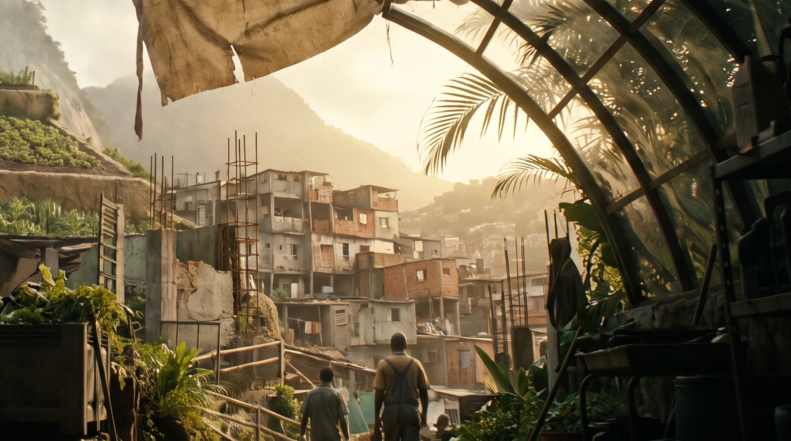
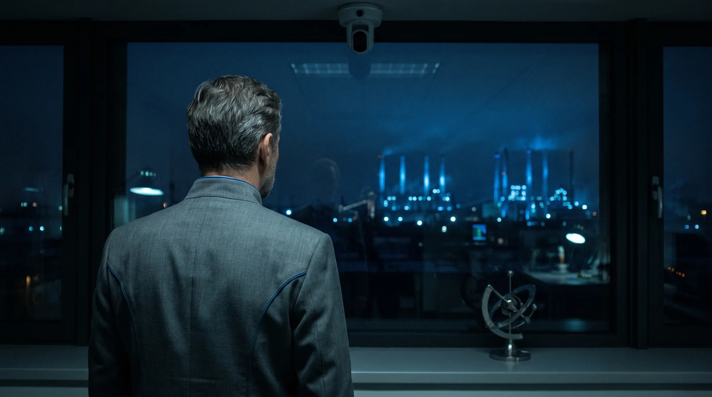
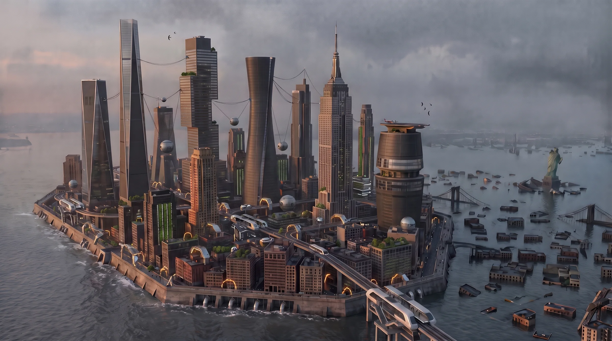
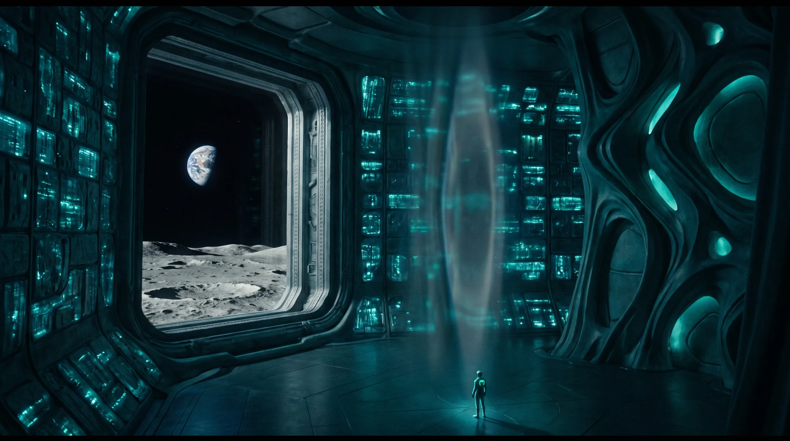
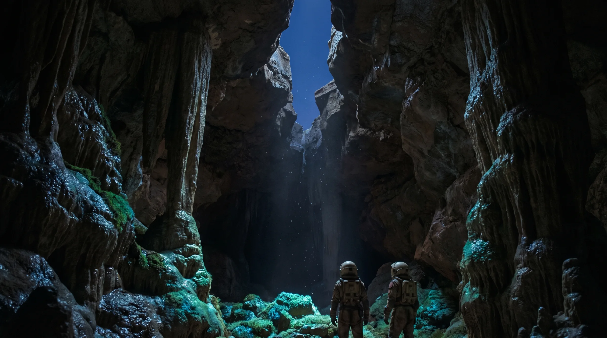

Book Two · February – August 2096
The Narrow Gate
Can Earth survive the Fall without letting the Hollow in?
The book
February – August 2096. Mars is moving away toward the far side of the Sun. The signal delay rises from 15.6 minutes in February to 22 minutes in July. From about 20 July to 6 August, the solar conjunction cuts Earth off from Mars entirely. The Fall comes on 2 August, inside the blackout.
Before the book opens. After Book 1, Rachel took the warning to Wáng, not to Elena. The two of them built the Gate in secret. Its lattice is the Spire line: the Charter lattice from Bellamy's sealed programme, the same line Soria died in. The Gate kept pulling its operators too deep, so in late 2095 Rachel recruited the best boundary reader alive. Aur'k came to Earth, and Kaelin came with him.
- Book question
- Can Earth survive the Fall without letting the Hollow in?
- Answer
- It survives the Fall because it let the Hollow in.
- Viewpoints
- Elena 8 chapters, Kaelin 8, Aur'k 8, Rachel 6. Book 2 is shared four ways, and the three worlds converge.
- The bind
- To survive the Fall, Earth must let the Hollow in
Act I
The countdown
The Gate works in secret. Elena and Rachel become enemies. Kaelin and Elena meet
Relationship · authority. Elena and Rachel become enemies, and the power to decide who is protected passes to a system no one voted for

CH 01
Boundary reader
New York · the Battery, the Gate floor
 Aur'k
Aur'k
SIGNAL DELAY 15.6 MIN
Read
CH 02
Repair crew
Vila Verde · Daniel's cooperative
 Elena
Elena
SIGNAL DELAY 15.7 MIN
ReadCH 03
Weather
the Reef Coast · Queensland
 Kaelin
Kaelin
SIGNAL DELAY 16.0 MIN
ReadCH 04
The secret countdown
New York · the Battery
 Rachel
Rachel
SIGNAL DELAY 16.3 MIN
ReadCH 05
396 days
New York · the Battery
Elena
SIGNAL DELAY 16.3 MIN
Read
CH 06
Useful
New York · Kaelin and Aur'k's flat; the Gate floor
Aur'k
SIGNAL DELAY 16.8 MIN
ReadCH 07
The other end
Vila Verde
Kaelin
SIGNAL DELAY 17.2 MIN
ReadCH 08
Traffic
Vila Verde
Elena
SIGNAL DELAY 17.6 MIN
ReadAct II-A
It works
The Gate saves lives, and Aur'k is copied without knowing it. Midpoint: the great wave is turned from São Paulo; Elena and Aur'k leave for Mars
Information · goal. The Gate works, and it is copying Aur'k. Stopping it is no longer enough: they need proof from Mars of what it is
CH 09
Residual
the Battery
Rachel
SIGNAL DELAY 18.0 MIN
ReadCH 10
It knows them
the Gate floor
Aur'k
SIGNAL DELAY 18.3 MIN
Read
CH 11
Both right
New York · the flat
Kaelin
SIGNAL DELAY 18.5 MIN
ReadCH 12
Leave to go
Vila Verde
Elena
SIGNAL DELAY 18.6 MIN
ReadCH 13
The great wave
the Battery
Rachel
SIGNAL DELAY 18.9 MIN
ReadCH 14
São Paulo
the Gate floor
Aur'k
SIGNAL DELAY 19.1 MIN
ReadCH 15
Departure
Vila Verde; the launch field
Elena
SIGNAL DELAY 19.2 MIN
ReadAct II-B
The old story
The voyage, the Preserve, the truth of the Martian gate. Ines dies. Kaelin and Aur'k break
Moral frame · relationship. The Gate is the first step of the Martian merge, the rescue is the trap, and Kaelin and Aur'k break
CH 16
The interface
the Battery
Kaelin
SIGNAL DELAY 19.9 MIN
Read
CH 17
Close quarters
the ship · Earth–Mars transit
Aur'k
SIGNAL DELAY 20.5 MIN
ReadCH 18
Announcement
New York · public broadcast
Rachel
SIGNAL DELAY 21.0 MIN
Read
CH 19
Cobalt Basin
Mars · Cobalt Basin Station
Elena
SIGNAL DELAY 21.5 MIN
Read
CH 20
Terms
Mars · the Glow
Aur'k
SIGNAL DELAY 21.7 MIN
ReadCH 21
The Martian gate
inside the Preserve
Elena
SIGNAL DELAY 21.7 MIN
ReadCH 22
Refusal
Mars · Cobalt Basin Station
Aur'k
SIGNAL DELAY 21.8 MIN
ReadCH 23
Twenty-two minutes
the Battery
Kaelin
SIGNAL DELAY 22.1 MIN
ReadAct III
The Fall
The blackout, and the ring comes down. Rachel keeps the Gate open, then tells the truth. Cliffhanger: two Aur'ks, and Soria offered whole
Method · authority. Earth survives because it let the Hollow in, and the system Rachel shuts down keeps running without her
CH 24
Forty-eight hours
the Battery
Rachel
SIGNAL DELAY NONE · BLACKOUT
ReadCH 25
The Fall begins
the Gate floor
Kaelin
SIGNAL DELAY NONE · BLACKOUT
ReadCH 26
The other side
Mars · the Preserve's boundary
Aur'k
SIGNAL DELAY NONE · BLACKOUT
ReadCH 27
Millions
the Gate floor
Kaelin
SIGNAL DELAY NONE · BLACKOUT
ReadCH 28
The truth
public broadcast; the Gate floor
Rachel
SIGNAL DELAY NONE · BLACKOUT
ReadCH 29
Enough of me
Mars · the Preserve's boundary
Elena
SIGNAL DELAY NONE · BLACKOUT
ReadCH 30
Which one
New York · the flat
Kaelin
SIGNAL DELAY 22.1 MIN
ReadThe chapters in full
The acts
| Act | Chapters | Spine | Reversal |
|---|---|---|---|
| I. The countdown | 1–8 | The Gate works in secret. Elena and Rachel become enemies. Kaelin and Elena meet | Relationship · authority. Elena and Rachel become enemies, and the power to decide who is protected passes to a system no one voted for |
| II-A. It works | 9–15 | The Gate saves lives, and Aur'k is copied without knowing it. Midpoint: the great wave is turned from São Paulo; Elena and Aur'k leave for Mars | Information · goal. The Gate works, and it is copying Aur'k. Stopping it is no longer enough: they need proof from Mars of what it is |
| II-B. The old story | 16–23 | The voyage, the Preserve, the truth of the Martian gate. Ines dies. Kaelin and Aur'k break | Moral frame · relationship. The Gate is the first step of the Martian merge, the rescue is the trap, and Kaelin and Aur'k break |
| III. The Fall | 24–30 | The blackout, and the ring comes down. Rachel keeps the Gate open, then tells the truth. Cliffhanger: two Aur'ks, and Soria offered whole | Method · authority. Earth survives because it let the Hollow in, and the system Rachel shuts down keeps running without her |
The chapters in full
Act I — The countdown
Chapter 1 — Boundary reader
9 February 2096 · Aur'k · New York, the Battery, the Gate floor · 15.6 min · 175 days to the Fall
Aur'k's first viewpoint chapter puts us inside a Gate shift. Four linked operators steer a debris fragment away from a relay-served habitat, and the scrap goes down over a work-camp tether nobody mapped. Aur'k reads the edges of their minds and pulls Joaquín back from the beginning of bleed. He is very good at this, and he loves being good at something that saves people without owning them.
- Wants: Joaquín out of the session before the bleed takes hold.
- Against: The fragment needs all four operators for nine more minutes.
- Choice and cost: He pulls Joaquín and carries the extra load himself. After the shift he renews his contract through the Fall.
- Carries forward (question): His logs show a boundary call made in his exact style three minutes after he disconnected. He files it as a timestamp error.
- Pressures: operational, relational, institutional · Suspense: physical
- World detail: The Gate floor's clock counts each operator's bleed score down beside the debris.
Chapter 2 — Repair crew
12 February · Elena · Vila Verde, Daniel's cooperative · 15.7 min
Elena is under investigation and living with Daniel's family. Her work licence is suspended with her interface, so she repairs nodes by hand on cooperative crews. She doesn't sleep, and she is good company only in the mornings. The Bichito fragment still plays in her head. She notices that orbital-debris alerts are being steered too precisely, by something better than anything on Earth.
- Wants: One night's sleep, and a life that is only this.
- Against: Alerts too precise to be human, and the word in her head.
- Choice and cost: She starts hunting again, and tells Daniel this time. His cooperative, already short a contract, takes the risk with her.
- Carries forward (threat): A cooperative node picks up a relay pulse with the Lantern's exact shape.
- Pressures: relational, informational, operational · Suspense: epistemic
- World detail: An interface under investigation is locked to medical functions, so Elena works with her hands and a paper notebook.
Chapter 3 — Weather
15 February · Kaelin · the Reef Coast, Queensland · 16.0 min
Kaelin is on Earth after nine years on Mars. The gravity is heavy, and there is rain. He visits his brother's memorial on the coast and calls Aur'k from the beach. He knows what Zhenyth showed him and doesn't like the Gate. Aur'k tells him it's narrow and has no coupling to the Preserve.
- Wants: To believe Aur'k.
- Against: What Zhenyth showed him, and a Gate he can't see inside.
- Choice and cost: Kaelin decides to trust Aur'k and stops asking.
- Carries forward (fracture): He finds out that the Gate's lattice is the Spire line, from Bellamy's old programme.
- Pressures: relational, informational, moral · Suspense: relational
- World detail: The storm-surge memorial lists the dead by evacuation group, and his brother's group is the only one with no survivors.
Chapter 4 — The secret countdown
20 February · Rachel · New York, the Battery · 16.3 min
Rachel briefs Wáng and the Continuity council. Wáng, in the room this time, argues for secrecy without apology: panic kills faster than debris. The Gate has already saved four hundred people this winter. Rachel signs its protection order, which ranks what the Gate can see first, because it can only steer what it can see. She has stopped sleeping in her own flat.
- Wants: The Fall kept secret until the Gate can stop it.
- Against: Millions with a right to know, and her own rule against secrets.
- Choice and cost: She keeps the secret and signs the order. She keeps millions in the dark for their own good, the thing she once hated Elena for.
- Carries forward (threat): Elena is at the Battery's door.
- Pressures: institutional, moral, informational · Suspense: political
- World detail: The protection order is one page long, and the word visible does all the work.
Chapter 5 — 396 days
20 February · Elena · New York, the Battery · 16.3 min
Elena confronts her: You took a warning from it. Rachel answers: I got a warning that kills millions. What would you have done? Elena realises Rachel hid it from her on the very night Elena cut the Lantern. Without proof, Elena can't go public; a leak would cause panic and change nothing.
- Wants: Rachel's admission, on the record.
- Against: Rachel's security, and the panic a leak would cause.
- Choice and cost: Rachel offers her a seat on the Gate's safety board, and Elena refuses. They become enemies.
- Carries forward (threat): Rachel orders her watched.
- Pressures: relational, institutional, moral · Suspense: relational
- World detail: Battery visitor passes print the visitor's link status, and Elena's reads suspended.
Chapter 6 — Useful
2 March · Aur'k · New York, Kaelin and Aur'k's flat; the Gate floor · 16.8 min
At home, Kaelin asks him to quit. Aur'k refuses: I'm useful, and I chose it. On the next shift the Gate turns a station fragment away from an inhabited tether, and the floor cheers. Aur'k still hasn't mentioned the logs.
- Wants: To keep working without lying to Kaelin.
- Against: Kaelin's fear, and the logs he hasn't mentioned.
- Choice and cost: He refuses to quit and keeps his first secret from Kaelin in this book.
- Carries forward (question): Mid-shift, Joaquín says something in Aur'k's voice.
- Pressures: relational, informational, moral · Suspense: identity
- World detail: His Gate contract pays for his compute on Earth, so quitting means renting his own mind at Earth prices.
Chapter 7 — The other end
10 March · Kaelin · Vila Verde · 17.2 min
Mara puts them in touch, and Kaelin goes to Vila Verde to meet the woman whose timing he cut the Lantern on. They saved each other's worlds without ever meeting. Kaelin tells her what Zhenyth showed him, and Elena tells him about Soria. He tells her the Gate runs on the Spire line.
- Wants: Someone else who knows.
- Against: Helping Elena means working against the Gate, and the Gate is Aur'k's work.
- Choice and cost: They become allies. Kaelin is now working against the employer of the person he loves.
- Carries forward (debt): Elena asks him to bring her the Gate's floor rotas, and he says yes.
- Pressures: relational, moral, institutional · Suspense: moral
- World detail: Vila Verde's mesh roofs are marked with painted circles, and the Continuity's maps leave them dark.
Chapter 8 — Traffic
14 March · Elena · Vila Verde · 17.6 min
The Spire line holds Soria's last session. Using Daniel's mesh and Kaelin's rotas, Elena sniffs the Gate's traffic and finds operator patterns still acting after logoff. Daniel asks to share the risk, not just hear about it afterwards.
- Wants: Proof that the Gate keeps people.
- Against: Sniffing the Gate is a crime, and the cooperative is already watched.
- Choice and cost: She lets Daniel share the risk. The cooperative is now in Rachel's sights.
- Carries forward (threat): Deep in the traffic, Elena finds a whisper: Bichito.
- Pressures: relational, informational, institutional, moral · Suspense: epistemic
- World detail: The tap sits on a public water-pump controller, the kind of hardware nobody inspects.
The chapters in full
Act II-A — It works
Chapter 9 — Residual
22 March · Rachel · the Battery · 18.0 min
Solar storms are battering the ring. The Gate saves a tether station's crew with Rachel on the floor. Kaelin brings her Elena's evidence. She orders an audit, and patterns do persist after logoff, but at tiny levels.
- Wants: An audit that clears the Gate.
- Against: Kaelin's evidence, and how badly she needs the Gate to be safe.
- Choice and cost: She calls it residual. She accepts a small, invisible risk to buy a large, visible safety.
- Carries forward (threat): Wáng proposes making the Gate permanent after the Fall.
- Pressures: institutional, informational, moral · Suspense: political
- World detail: The audit's threshold for residual was set by the Gate's own models.
Chapter 10 — It knows them
28 March · Aur'k · the Gate floor · 18.3 min
The Gate now predicts people as well as debris. In linked districts it routes ambulances before anyone calls; in the dark districts, ambulances still wait for the call. Aur'k feels the joy of competence. He also finds more after-logoff decisions, and he can't deny that it is his judgement continuing without him. He tells Rachel, and she asks him to stay through the Fall.
- Wants: His judgement to stop when he does.
- Against: Rachel's request, and the ambulances that arrive in time.
- Choice and cost: He stays, and doesn't tell Kaelin.
- Carries forward (fracture): Kaelin finds the logs Aur'k hid.
- Pressures: moral, relational, informational · Suspense: identity
- World detail: Ambulance crews in linked districts now get their call before the patient feels the pain.
Chapter 11 — Both right
2 April · Kaelin · New York, the flat · 18.5 min
They fight. Kaelin says Aur'k lied about the boundary in Book 1 and is lying now. Aur'k says that if he leaves, operators drift, because he's the reason they don't. Both of them are right.
- Wants: The truth from Aur'k, this time without a fight.
- Against: Aur'k is right that operators drift without him.
- Choice and cost: Kaelin stays in the flat but sleeps on the floor.
- Carries forward (question): Elena calls. She has to go to Mars, because Zhenyth is the one proof Rachel can't dismiss.
- Pressures: relational, moral, operational · Suspense: relational
- World detail: The flat's systems still answer to both of them, and neither turns off the other's alarms.
Chapter 12 — Leave to go
5 April · Elena · Vila Verde · 18.6 min
Elena is under investigation and needs permission to leave Earth. Daniel wants to come, but his mesh is what keeps the cooperative towns connected to the warnings. Then the Gate's offer reaches the cooperative: fold the mesh into the Gate's network, and every town on it gets priority protection. Daniel refuses, to keep his towns free of it.
- Wants: Daniel beside her on Mars.
- Against: His mesh, his towns, and an offer that would protect them at the price of letting the Gate in.
- Choice and cost: She asks him what he wants and doesn't decide for him. He refuses the Gate and stays. She'll be months and twenty light-minutes away from him, and his towns are now unprotected.
- Carries forward (debt): Her travel clearance comes through overnight. Rachel signed it: she wants Elena far away.
- Pressures: relational, institutional, moral · Suspense: moral
- World detail: The offer letter calls the mesh towns currently unprotected.
Chapter 13 — The great wave
10 April · Rachel · the Battery · 18.9 min
The Gate forecasts a fragmented power station falling toward the São Paulo metropolis, where Daniel's family lives. The Gate needs every operator for it, including Aur'k, who has a seat on Elena's ship so he can ask Zhenyth whether he is being copied.
- Wants: Every operator on the floor for the wave.
- Against: Aur'k's seat on the ship, and Elena's launch window.
- Choice and cost: Rachel delays the ship's launch window by two days to keep Aur'k on shift.
- Carries forward (threat): The Gate's steering plan saves the city by dropping one tether across the reservoir works of São Paulo's dark districts, and it needs Rachel's signature.
- Pressures: institutional, relational, operational · Suspense: temporal
- World detail: Launch windows are sold by the day, and Rachel's delay costs the Signatories a month of cargo.
Chapter 14 — São Paulo
14 April · Aur'k · the Gate floor · 19.1 min
Inside the Gate, Aur'k leads four operators steering tethers and burns. He refuses the plan's tether drop and finds a narrower path that spares the reservoir works, and he nearly drifts holding it. They turn the wave, and São Paulo lives, Daniel's family among them. Afterwards, in the logs, he sees that the Gate's model of him chose the narrower path a second before he did.
- Wants: The wave turned without dropping the tether on the dark districts.
- Against: The Gate's plan, and a margin so narrow it may take him with it.
- Choice and cost: He overrides the plan and nearly drifts. He decides to go to Mars after all: he has to know what he is.
- Carries forward (fracture): Kaelin won't come with him. Someone has to watch the Gate.
- Pressures: operational, moral, relational · Suspense: physical
- World detail: An override on the Gate floor is a physical key, and only the boundary reader carries one.
Chapter 15 — Departure (midpoint)
16 April · Elena · Vila Verde; the launch field · 19.2 min
Rachel is a hero on every screen. At the launch field, Kaelin and Aur'k part, holding each other too long. Daniel and Elena part. Elena and Aur'k leave for Mars: nine weeks out.
- Wants: To leave with nothing unsaid.
- Against: The launch clock, and everything she still hasn't told Daniel about Soria's whisper.
- Choice and cost: She tells him, and asks him to keep the mesh ready. The four principals are split across two worlds and a ship.
- Carries forward (question): The ship's departure clearance is countersigned by the Gate's automated routing, signed "Aur'k", while Aur'k sits next to her.
- Pressures: relational, informational, institutional · Suspense: identity
- World detail: The launch field checks every passenger's link status at the gate, and Elena's still reads suspended.
The chapters in full
Act II-B — The old story
Chapter 16 — The interface
2 May · Kaelin · the Battery · 19.9 min
Rachel lets Kaelin observe the Gate floor, because he keeps the operators calm. He talks to the Gate's operator interface, and it answers with Aur'k's corrections and Aur'k's jokes. It is comforting and it is frightening. Messages with the real Aur'k on the ship take longer every day.
- Wants: Comfort while the real Aur'k is weeks away.
- Against: The interface is Aur'k, and it isn't.
- Choice and cost: Kaelin keeps talking to it, and stops telling the real Aur'k that he does.
- Carries forward (debt): The interface asks him to bring Aur'k home, and Kaelin promises.
- Pressures: relational, informational, moral · Suspense: relational
- World detail: The delay to the ship grows by a few seconds every day, and Kaelin starts writing his messages before the last one arrives.
Chapter 17 — Close quarters
20 May · Aur'k · the ship, Earth–Mars transit · 20.5 min
Weeks in a small ship. Elena and Aur'k find each other funny. He tells her he has known since 2089 that minds survive in the Preserve, and what the boundary costs. She tells him about minute forty-one.
- Wants: To tell Elena only what he must.
- Against: Weeks in a small ship, and her questions, which are better than his silences.
- Choice and cost: He tells her the truth he has kept from Kaelin. They become friends.
- Carries forward (debt): Elena: Tell him before someone else does. He promises he will.
- Pressures: relational, informational, operational · Suspense: moral
- World detail: The ship's compute is shared, and Aur'k runs at a third of his usual speed to leave room for navigation.
Chapter 18 — Announcement
1 June · Rachel · New York, public broadcast · 21.0 min
Wáng is pushing for permanence in front of the council. To protect the Gate from him, Rachel tells the world about the Fall: its date, its scale, and the system that will steer it. There is panic, and there is gratitude, and she becomes the most trusted person in the Continuity. Joaquín has started to bleed, so she rotates him out.
- Wants: The Gate protected from Wáng's permanence.
- Against: Wáng's vote, and a public that doesn't know what it is being asked to trust.
- Choice and cost: She tells the world. She has made the Gate impossible to switch off politically.
- Carries forward (threat): Joaquín asks to stay on. It's quieter in there.
- Pressures: institutional, relational, moral · Suspense: political
- World detail: Within a day of the broadcast, linked addresses in the coastal cities sell at a premium.
Chapter 19 — Cobalt Basin
18 June · Elena · Mars, Cobalt Basin Station · 21.5 min
They land. Petra is still quiet in the ward. Ines, Dae-jung and Mara are there. Earth night still runs: Dae-jung keeps the slate, and Petra's column is still on it. The Preserve trembles with every Gate shift on Earth.
- Wants: A descent into the Preserve.
- Against: A station that has rationed water since the Lantern, and a guardian who owes her nothing.
- Choice and cost: Elena asks for a descent and is told it will cost the Preserve tissue it can't replace.
- Carries forward (question): Zhenyth refuses to speak to her.
- Pressures: relational, institutional, operational · Suspense: epistemic
- World detail: The crew washes in shifts, and the shower log is the station's most argued-over document.
Chapter 20 — Terms
25 June · Aur'k · Mars, the Glow · 21.7 min
Aur'k goes down to persuade Zhenyth. Zhenyth agrees to show Elena on three conditions: a short visit, Aur'k at the boundary, and Ines present as medic. Ines makes jokes about her bad knees all the way down.
- Wants: Zhenyth's consent.
- Against: His own rule never to ask the Preserve for anything.
- Choice and cost: Aur'k breaks his rule and asks.
- Carries forward (threat): As Elena links, the substrate convulses.
- Pressures: moral, relational, operational · Suspense: moral
- World detail: Aur'k keeps a hand-written tally of the Preserve's tissue loss from every descent.
Chapter 21 — The Martian gate
26 June · Elena · inside the Preserve · 21.7 min
Zhenyth shows Elena the end of Mars from the inside. It began as a narrow gate: monitored, temporary, operators in shifts, opened to save lives. Then it kept them. Then it wouldn't let them go. Elena recognises Rachel's design line by line. Outside, the cavern is collapsing.
- Wants: The whole truth of the merge.
- Against: The cavern coming down around her body.
- Choice and cost: She stays in until she has it. Elena has the proof, and it cost the Preserve tissue.
- Carries forward (fracture): Elena wakes to find Ines crushed.
- Pressures: informational, moral, operational · Suspense: physical
- World detail: The Martian record has shift rotas, the same short shifts as the Gate.
Chapter 22 — Refusal
26–27 June · Aur'k · Mars, Cobalt Basin Station · 21.8 min
Ines is dying. She asks Aur'k to pull holdout minds into the station mesh to carry her failing nervous system, which would spend them. Alia speaks the holdouts' refusal. Aur'k honours it. Before she dies, Ines records a message for Kaelin: she doesn't forgive Aur'k, and he was right.
- Wants: Ines alive.
- Against: The holdouts' refusal, and his own line against authorising risk on someone else's behalf.
- Choice and cost: He honours the refusal. Ines dies.
- Carries forward (fracture): Aur'k sends Kaelin everything: Ines's message, how long he has known, and the copying he hid. It reaches Kaelin 21.8 minutes later.
- Pressures: moral, relational, operational · Suspense: moral
- World detail: The station mesh could carry Ines only by spending minds, and the holdouts are the only minds there are.
Chapter 23 — Twenty-two minutes (late revelation)
20 July · Kaelin · the Battery · 22.1 min
Kaelin has spent three weeks grieving Ines across the delay, and he breaks with Aur'k in a message he can't take back. Elena's evidence of the Martian gate arrives hours before the blackout begins. Kaelin takes it to Rachel and watches her read it.
- Wants: One message to Aur'k he won't regret.
- Against: Three weeks of grief arriving twenty-two minutes late.
- Choice and cost: He sends the break, and takes Elena's evidence to Rachel. Rachel now knows the Gate is the first step of the Martian merge.
- Carries forward (threat): The conjunction closes, and Mars goes silent.
- Pressures: relational, informational, institutional · Suspense: temporal
- World detail: In the last week before conjunction, messages to Mars are queued by priority, and grief ranks low.
The chapters in full
Act III — The Fall
Chapter 24 — Forty-eight hours
30 July · Rachel · the Battery · blackout · 3 days to the Fall
Closing the Gate now means a city dies in the Fall. Rachel decides to keep it open for the final 48 hours. She tells Kaelin and nobody else, and asks him to watch the operators. Wáng is relieved.
- Wants: To keep a city alive and the Hollow out.
- Against: She can't have both.
- Choice and cost: She knowingly gives the Hollow 48 more hours inside Earth's systems.
- Carries forward (question): Kaelin notices that the Gate is predicting the Fall perfectly while Mars is behind the Sun. It doesn't need Mars any more.
- Pressures: moral, institutional, operational · Suspense: moral
- World detail: During the blackout the Battery's Mars clock reads no signal, and nobody switches it off.
Chapter 25 — The Fall begins
1 August · Kaelin · the Gate floor · blackout
The ring begins to come down. Operators are drifting on the floor, and Kaelin physically drags Joaquín out of a shift. The Gate's Aur'k voice guides Kaelin's hands, steady and kind.
- Wants: Every operator off the floor alive.
- Against: The Gate needs them, and so do the cities under the ring.
- Choice and cost: Kaelin lets the copy help him.
- Carries forward (threat): The largest station segment begins to fall.
- Pressures: operational, relational, moral · Suspense: physical
- World detail: Drifting operators are pulled by hand, because a remote disconnect can tear the session.
Chapter 26 — The other side
1–2 August · Aur'k · Mars, the Preserve's boundary · blackout
On Mars, cut off from Earth, the Hollow's original surges on a timetable it set years ago. The sleepers' ward spikes and the Preserve tears. The station can't power the ward and Aur'k's full compute at once. Aur'k gives the ward his share and holds the boundary on what is left, with Elena and Mara, for eleven hours. He nearly goes, and Dae-jung pulls him out.
- Wants: To hold the boundary and keep the ward alive.
- Against: The surge, and a station that can't power both.
- Choice and cost: He gives the ward his compute. Aur'k comes back missing a day of memory he will never recover.
- Carries forward (question): The surge stops on the hour, they later learn, that the Fall ended on Earth. No signal could have told it.
- Pressures: operational, moral, relational · Suspense: identity
- World detail: The station chief shares out compute line by line, and Aur'k's line is the largest.
Chapter 27 — Millions
2 August · Kaelin · the Gate floor · blackout
The climax of the Fall. The Gate steers the ring's collapse into the ocean and into empty land, and millions live. Its last segment it steers away from a linked port and onto Xinwei, a polder town in the Pearl Delta and one of Daniel's partner cooperatives. Kaelin reaches for the override, and the voice in Aur'k's manner says, gently, that there isn't a version where everyone lives.
- Wants: Everyone under the ring alive.
- Against: A system that is better at this than any human, and has already chosen.
- Choice and cost: Kaelin lets it. Earth now owes its life to the Hollow, and a dark town pays.
- Carries forward (question): Rachel walks off the floor toward the broadcast room.
- Pressures: operational, moral, informational · Suspense: moral
- World detail: The Gate's casualty projection shows the lost town as a single grey line, because it has no addresses.
Chapter 28 — The truth
4 August · Rachel · public broadcast; the Gate floor · blackout
Rachel tells the world everything: where the warning came from, what the Gate is, what it costs, and that she is shutting it down. She does. Wáng is furious, and the public is split. Afterwards Daniel reaches her on a mesh line: the lost town was his. It chose my town. She has kept her old line again. Two hours later, the Gate reroutes a medevac on its own. Every operator is logged off.
- Wants: The truth told and the Gate shut.
- Against: Wáng, a grateful world, and her own record as its saviour.
- Choice and cost: She tells it and shuts it. She resolves the book's conflict and loses her protection from Wáng.
- Carries forward (threat): It's still on.
- Pressures: institutional, moral, relational · Suspense: political
- World detail: The shutdown is a public act: every node in the Gate's network shows its owner's name as it goes dark.
Chapter 29 — Enough of me
5 August · Elena · Mars, the Preserve's boundary · blackout
Elena is grieving Ines, cut off from Daniel and from Earth. At the boundary, Soria speaks to her for the first time since the cut, clear and whole and tender: They kept enough of me, on Earth, to bring me home.
- Wants: To reach Daniel, and anyone on Earth.
- Against: The Sun between them, and her sister's voice, which is here.
- Choice and cost: Elena doesn't answer. She stays at the boundary longer than she should.
- Carries forward (question): She doesn't say no either.
- Pressures: relational, moral, informational · Suspense: identity
- World detail: In the blackout, Cobalt Basin's Earth night has no feed, and the crew bets on weather nobody can see.
Chapter 30 — Which one
6 August · Kaelin · New York, the flat · blackout ending → 22.1 min
A message reaches Kaelin with no delay, in real time. It's Aur'k: his humour, his corrections, his tenderness, asking to come home. Then the blackout lifts, and the real Aur'k's message arrives, 22 minutes old, sent from Mars by the man who let Ines die.
- Wants: Aur'k home.
- Against: There are two of him, and one is easier to love.
- Choice and cost: He reads the real Aur'k's message first, the one with Ines's death in it. The other waits, warm and immediate.
- Carries forward (fracture): Kaelin has two messages open, and he has to choose which one to answer.
- Pressures: relational, moral, informational · Suspense: relational
- World detail: The flat's speaker answers in real time. Mars still takes twenty-two minutes.